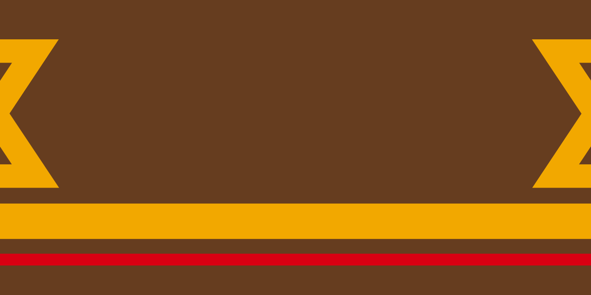
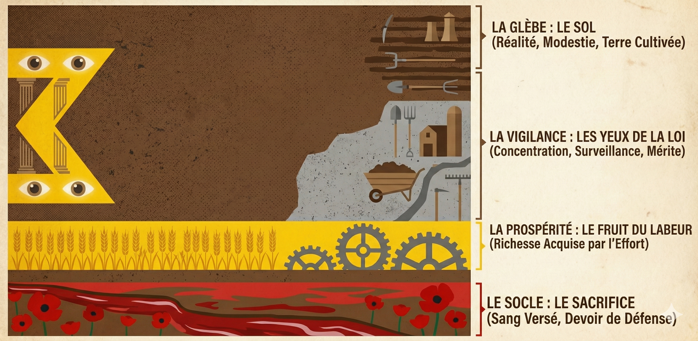

Second Etat d'Oslavie
Le drapeau oslave

Spécifications géométriques et chromatiques
Usage : Pavillon civil, d'état et militaire..
Format : 1:2 (La longueur est égale à deux fois la hauteur).
Nuancier : Les couleurs doivent respecter les normes pigmentaires suivantes. Toute variation éclatante ou brillante est proscrite ; les teintes doivent rester mates pour refléter la modestie nationale. Brun Glèbe : Pantone "478 C" Jaune Labeur : Pantone "137 C" Rouge Devoir : Pantone "186 C"
Géométrie : L'architecture du pavillon national suit une stratification verticale rigoureuse s'élevant depuis la base. La structure se compose successivement d'une bande (Brun Glèbe) de 2/20 H suivie du socle (Rouge Devoir) d'une épaisseur de 1/20 H, surmonté de l'Interstice (Brun Glèbe) 1/20 H et de la bande (Jaune Labeur) dite du Fruit 3/20 H, l'espace supérieur restant constituant le Champ (Brun Glèbe) 13/20 H. Au sein de ce Champ, centrés verticalement, sont disposés symétriquement deux Vigiles (Jaunes Labeur) en forme de Sigma (Σ) d'une hauteur de 1/2 H ; ancrés horizontalement à une distance de 1/10 L des bords du guindant et du battant, ils orientent leurs pointes vers le centre, marquant la convergence des forces vives vers l'État.
Matière : Le drapeau doit être imprimé ou cousu sur une toile de laine ou de polyester mat. Le satin et la soie sont réservés aux diplomates étrangers.
Sens de lecture : Le "Socle" rouge doit impérativement être en bas. Hisser le drapeau à l'envers est considéré comme un signal de détresse nationale ou un acte de sédition.
Symbolique des éléments

Loin des allégories célestes ou monarchiques, le drapeau du Second État est un manifeste tellurique : l'Oslavie est une nation qui regarde la réalité en face. Son champ dominant, le Marron (Glèbe), ancre le pays dans la matérialité de ses terres arables et de ses cités reconstruites, érigeant la modestie en vertu cardinale.
L'ensemble de l'édifice social repose sur le Socle Rouge (Devoir), une ligne fine à la base de l'étendard, rappelant que notre stabilité est bâtie sur le sacrifice silencieux des anciens et le devoir de défense. De ce fondement s'élève la Bande Jaune (Labeur), symbole de Prospérité ; située au-dessus du sol, elle signifie que la richesse n'est pas un don du ciel, mais le fruit mécanique de l'effort industriel et agricole. Enfin, les Chevrons de Vigilance ("Les Vigiles"), pointés vers l'intérieur, marquent la convergence nécessaire des forces vives vers l'État central, rappelant, tels les "Yeux de la Loi", que la méritocratie ne perdure que sous une garde perpétuelle.
Historique
- 1876
Par le Décret de la Glèbe, le Premier État met fin aux variations locales des bannières provinciales. L'ordre des couleurs est officiellement scellé. À cette époque, les proportions sont encore variables selon les tisserands.
- 1918
Lors de la refondation constitutionnelle, le 1er Président du Second État XXX promulgue l'ajout des deux Chevrons latéraux ("Les Vigiles"). Ce changement marque la fin du féodalisme provincial : désormais, toutes les forces convergent vers le centre. Le drapeau devient le symbole d'une méritocratie surveillée.
- Mai 1924
Durant l'insurrection urbaine dite des "34 Jours", les milices séditieuses tentent d'imposer un drapeau bicolore (Rouge et Jaune), supprimant le Marron de l'emblème. Cette tentative d'effacement de notre identité rurale et nationale provoque le soulèvement des campagnes. Le drapeau légitime est rétabli par le Gouvernement Provisoire dès la libération de Faellyne en juin.
- 1966
Dans un souci de rigueur industrielle, le 5ème Président du Second État XXX signe la Loi sur l'Intégrité des Symboles. Ce texte définit pour la première fois les contraintes techniques absolues : le format 1:2, les codes colorimétriques exacts...
- 1982
le Président Anton Vorne rappelle que le drapeau est "invariable et intouchable", coupant court aux propositions de certains designers modernistes de l'opposition souhaitant "alléger" le graphisme des Vigiles.